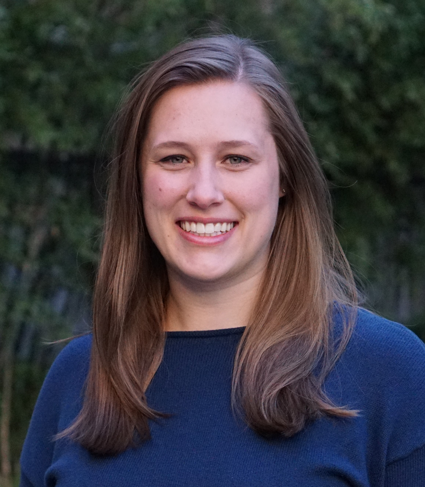

|
Kelsey Erin Grinde, PhD
|
 |
I am currently a Postdoctoral Teaching Fellow in the Department of Mathematics, Statistics, and Computer Science at Macalester College.
My teaching experience and interests lie primarily in undergraduate statistics — from intro to statistical theory. Statistics is an inherently collaborative, interdisciplinary field, and I love how this is reflected in the makeup of student backgrounds and interests in undergraduate statistics courses.
My current research interests fall into the realm of statistical genetics. The ultimate goal of my work is to develop statistical methods that help us analyze large genetic datasets and answer important questions about human disease and population history. Most recently, my work has focused on genetic studies in admixed populations, populations such as African Americans and Hispanics/Latinos with mixed and diverse ancestry, which have been vastly underrepresented in genetics research. My most recent first-author paper develops methods for controlling for multiple testing in admixture mapping studies: check out my paper in the American Journal of Human Genetics and my R package STEAM (Significance Threshold Estimation for Admixture Mapping) to learn more.
I love talking to current and prospective students about research, graduate programs, and careers in (bio)statistics. If you are a student (or educator) who would like to learn more about the opportunities in this field — and why I love working in it — please get in touch! I can best be reached via email (kgrinde at macalester dot edu).
|
CV
A pdf version of my CV is available here. For a few highlights, see below.
Education
Teaching Experience
Postdoctoral Teaching Fellow, Macalester College
STAT 155, Introduction to Statistical Modeling, Fall 2019 (2 sections)
STAT 155, Introduction to Statistical Modeling, Spring 2020
STAT 455, Mathematical Statistics, Spring 2020
Pre-Doctoral Instructor, University of Washington
Lead Teaching Assistant, University of Washington
Teaching Assistant, University of Washington
Instructor, University of Washington
Fun fact: I also spent many semesters as a volunteer teaching assistant and tutor at local elementary, middle, and high schools during my time as an undergraduate at St. Olaf College! I was studying to become a math teacher until I took a stats class and my path changed directions…
Research Interests
Statistical genetics
Biostatistics
Multiple testing
Research Experience
Selected Honors and Awards
NSF GRFP, 2016–2019
Thomas R. Fleming Excellence in Biostatistics Award, UW Biostatistics, 2019
Gertrude M. Cox Scholarship, ASA, 2018
Dorothy L. Simpson Leadership Award, ARCS Foundation Seattle, 2018
Excellence in Teaching Award, UW Biostatistics, 2018
Distinguished Oral Presentation Award, WNAR, 2018
Distinction in Statistics, St. Olaf College, 2014
|